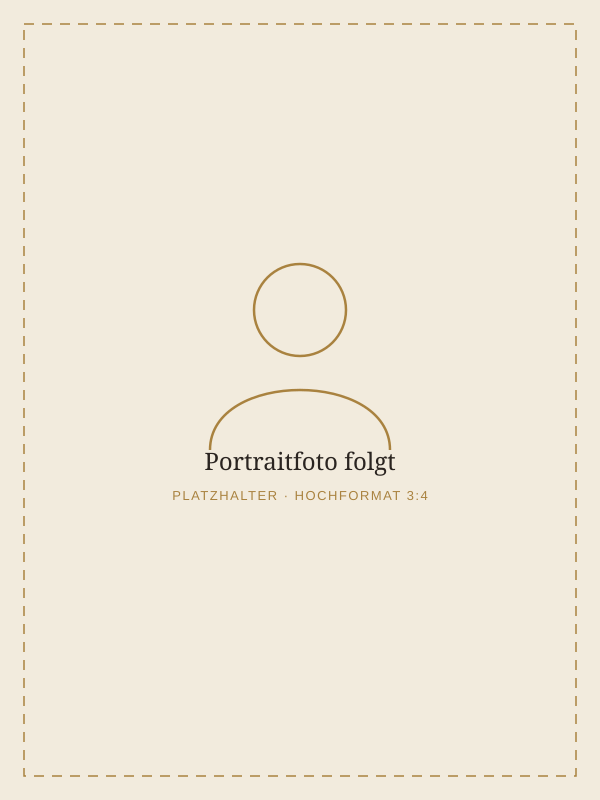
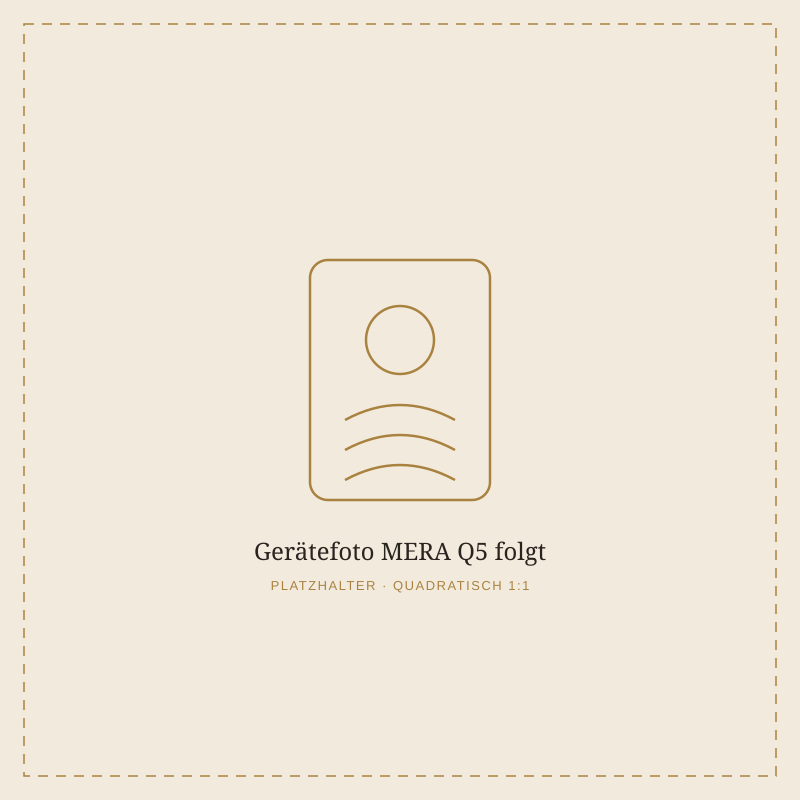

Elke Bund
Schon seit vielen Jahren begleitet mich das Thema Energie, Balance und Wohlbefinden — beruflich wie persönlich. Aus dieser Leidenschaft heraus habe ich mich in der Bioenergetik weitergebildet und meine Praxis in Trahütten bei Deutschlandsberg aufgebaut, mitten in der ruhigen Umgebung der Weststeiermark.
Mir ist wichtig, dass sich Menschen bei mir willkommen und aufgehoben fühlen. Jede Anwendung nehme ich mir Zeit für ein persönliches Gespräch, um auf Ihre aktuelle Situation und Ihre Wünsche einzugehen — bevor die MERA Q5 zum Einsatz kommt.
Platzhaltertext — wird gemeinsam mit Elke Bund final abgestimmt (Ausbildung, Werdegang, persönliche Note).

Was ist die MERA Q5?
Die MERA Q5 ist ein zertifiziertes Wellness-Gerät, entwickelt vom Schweizer Unternehmen Marexum. Sie arbeitet mit einer feinen Kombination aus Frequenz- und Vibrationstechnologie und wurde entwickelt, um die natürlichen Regulations- und Ausgleichsprozesse des Körpers sanft zu unterstützen.
Die Anwendung erfolgt bekleidet, in entspannter, liegender Position. Viele Anwenderinnen und Anwender beschreiben ein tiefes Gefühl von Ruhe und Gelöstheit bereits während der Sitzung.
- Herkunft: entwickelt vom Schweizer Unternehmen Marexum
- Wirkprinzip: Frequenz- und Vibrationstechnologie
- Zertifiziertes Wellness-Gerät
- Anwendung: nicht-invasiv, bekleidet, im Liegen
Die MERA Q5 dient der Entspannung und dem allgemeinen Wohlbefinden. Sie ersetzt keine medizinische Diagnose oder Behandlung.
Was Sie bei einer Anwendung erwartet
Jede Sitzung beginnt mit einem kurzen persönlichen Gespräch und endet mit ausreichend Zeit zum Nachspüren. So richten wir die Anwendung ganz auf Sie und Ihr aktuelles Befinden aus.
Gespräch
Kurzes Ankommen und Austausch darüber, was Sie gerade beschäftigt und wo Sie sich mehr Ausgleich wünschen.
Anwendung
Entspannt im Liegen, bekleidet — die MERA Q5 arbeitet ca. 45–60 Minuten sanft im Hintergrund.
Nachruhe
Zeit zum Nachspüren und ein kurzer Abschluss, bevor Sie gestärkt in Ihren Alltag zurückkehren.
Mögliche Schwerpunkte
Kennenlern-Gespräch
Kurzes, unverbindliches Telefonat, um Ihre Fragen zu klären und einen Termin zu vereinbaren.
Einzelanwendung
Ca. 60 Minuten inkl. Gespräch und Nachruhephase. Rufen Sie an oder schreiben Sie mir für die aktuelle Preisliste.
Vereinbaren Sie Ihren Termin
Ich freue mich auf Ihre Nachricht oder Ihren Anruf. Termine vergebe ich telefonisch nach Vereinbarung.
- Adresse
- Alfred-Coßmannweg 8a
8530 Deutschlandsberg (Trahütten)
Österreich - Telefon
- +43 664 91 90 900
- office@bioenergetik-mq5.at
- Öffnungszeiten
- Montag – Donnerstag, 9:00 – 18:00 Uhr
Termine nach telefonischer Vereinbarung